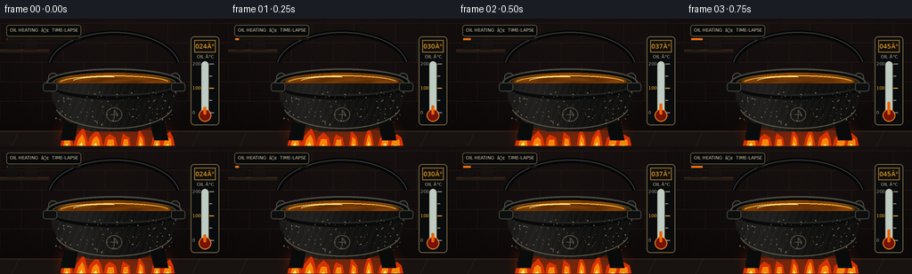
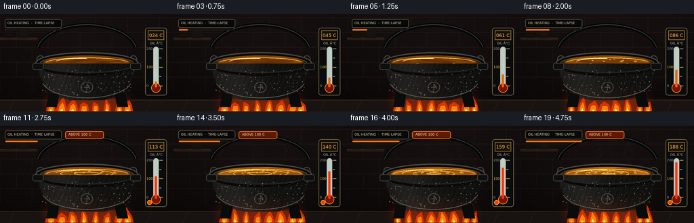
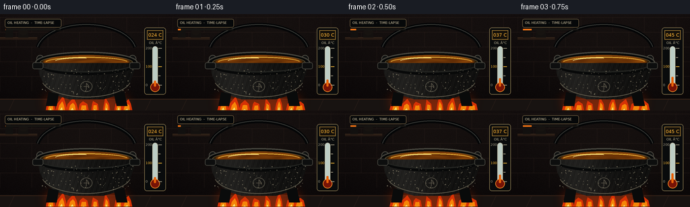
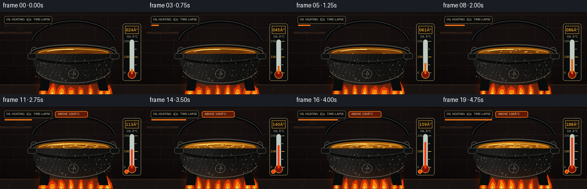

CODING AGENTS AS PIXEL WORLD MODELS
traex/GPT-5.6-Sol · phygen_110
点击播放 · 原生 RGB 像素
逐轮保存的候选
回放视频、检查图与代码变化。
每份候选均可单独播放。实际图片检查记录在下方工具轨迹中。
候选 01播放与检查图
点击播放 · 原生 RGB 像素

展开代码变化
--- 上一保存版本
+++ 本次保存版本
@@ -0,0 +1,279 @@
+from pathlib import Path
+import math, json
+import numpy as np
+from PIL import Image, ImageDraw, ImageFont, ImageFilter
+import artifact_io
+
+CASE_DIR = Path(__file__).resolve().parent
+W,H,N = 256,144,20
+S=3
+w,h=W*S,H*S
+rng=np.random.default_rng(110)
+
+# Fonts (local system font, with PIL fallback)
+def font(sz, bold=False):
+ paths = [
+ "/usr/share/fonts/truetype/dejavu/DejaVuSans-Bold.ttf" if bold else "/usr/share/fonts/truetype/dejavu/DejaVuSans.ttf",
+ "/usr/share/fonts/truetype/liberation2/LiberationSans-Bold.ttf" if bold else "/usr/share/fonts/truetype/liberation2/LiberationSans-Regular.ttf",
+ ]
+ for p in paths:
+ try: return ImageFont.truetype(p, sz*S)
+ except OSError: pass
+ return ImageFont.load_default()
+
+F6=font(5); F7=font(7); F8=font(8,True); F9=font(9,True)
+def scbox(b): return tuple(int(v*S) for v in b)
+def pts(p): return [(int(x*S),int(y*S)) for x,y in p]
+
+def smooth(a,b,x):
+ u=np.clip((x-a)/(b-a),0,1)
+ return u*u*(3-2*u)
+
+def make_background():
+ yy=np.linspace(0,1,h)[:,None]
+ xx=np.linspace(0,1,w)[None,:]
+ arr=np.empty((h,w,3),dtype=np.float32)
+ vign=np.sqrt(((xx-.5)/.72)**2+((yy-.48)/.9)**2)
+ arr[:,:,0]=26-10*yy-8*vign
+ arr[:,:,1]=20-8*yy-7*vign
+ arr[:,:,2]=18-7*yy-5*vign
+ noise=rng.normal(0,1.8,(h,w))
+ arr += noise[:,:,None]
+ im=Image.fromarray(np.uint8(np.clip(arr,0,255)),'RGB')
+ d=ImageDraw.Draw(im,'RGBA')
+ # old brick wall, intentionally subdued
+ brick_h=22*S; brick_w=47*S
+ for row,y in enumerate(range(5*S,108*S,brick_h)):
+ offset=(-23*S if row%2 else 0)
+ d.line([(0,y),(w,y)],fill=(71,53,43,48),width=S)
+ for x in range(offset,w+brick_w,brick_w):
+ d.line([(x,y),(x,y+brick_h)],fill=(68,50,41,42),width=S)
+ # warm furnace glow behind lower cauldron
+ glow=Image.new('RGBA',(w,h),(0,0,0,0)); gd=ImageDraw.Draw(glow,'RGBA')
+ for r in range(55,2,-3):
+ alpha=int(1.4*(58-r)) if r>35 else 26
+ gd.ellipse(scbox((128-r*1.25,118-r*.46,128+r*1.25,118+r*.46)),fill=(204,58,7,max(1,alpha//3)))
+ glow=glow.filter(ImageFilter.GaussianBlur(12*S))
+ im=Image.alpha_composite(im.convert('RGBA'),glow).convert('RGB')
+ d=ImageDraw.Draw(im,'RGBA')
+ # shelf and small silhouettes, gives heat haze something to refract
+ d.rectangle(scbox((0,35,55,38)),fill=(40,27,20,230))
+ d.line(pts([(0,35),(55,35)]),fill=(102,73,47,90),width=S)
+ d.rectangle(scbox((8,23,19,35)),fill=(18,17,15,220)); d.rectangle(scbox((11,19,16,23)),fill=(19,18,16,220))
+ d.rectangle(scbox((27,27,42,35)),fill=(20,17,15,230)); d.ellipse(scbox((28,21,41,31)),fill=(23,19,16,230))
+ # stone hearth floor
+ d.rectangle(scbox((0,126,256,144)),fill=(24,19,17,255))
+ d.line(pts([(0,127),(256,127)]),fill=(98,56,31,110),width=S)
+ for x in [21,83,158,224]: d.line(pts([(x,127),(x-8,144)]),fill=(70,49,40,70),width=S)
+ return im
+BASE=make_background()
+
+# Stable cast-iron speckle positions
+specks=[(rng.uniform(60,198),rng.uniform(83,120),rng.uniform(.25,.65)) for _ in range(115)]
+# Stable bubbles: x,y, start frame, phase/size
+bubbles=[]
+for j in range(28):
+ ang=rng.uniform(0,2*math.pi); rad=math.sqrt(rng.uniform(.08,1))
+ x=128+rad*57*math.cos(ang); y=73+rad*7.4*math.sin(ang)
+ start=int(rng.integers(5,19)); size=rng.uniform(.7,2.1)
+ bubbles.append((x,y,start,size,j*.71))
+
+def heat_warp(im, i):
+ strength=smooth(5,19,i)*2.2*S
+ if strength<.15: return im
+ a=np.asarray(im).copy()
+ out=a.copy()
+ # wavering column above hot oil; restrained horizontal refraction
+ for Y in range(8*S,63*S):
+ yn=Y/S
+ fade=smooth(8,32,yn)*(1-smooth(48,64,yn))
+ shift=int(round(strength*fade*(math.sin(yn*.42+i*.83)+.45*math.sin(yn*.93-i*.51))))
+ x0,x1=55*S,207*S
+ out[Y,x0:x1]=np.roll(a[Y,x0:x1],shift,axis=0)
+ return Image.fromarray(out)
+
+def draw_smoke(im,i):
+ amount=smooth(12,19,i)
+ if amount<=0: return im
+ layer=Image.new('RGBA',(w,h),(0,0,0,0)); d=ImageDraw.Draw(layer,'RGBA')
+ # wispy smoke, not steam: appears only near oil's smoke point
+ for k in range(4):
+ phase=i*.76+k*1.8
+ x0=(98+k*19+4*math.sin(phase))*S
+ y0=61*S
+ p=[]
+ for q in range(22):
+ yy=(61-q*2.15)*S
+ xx=x0+(4.5*math.sin(q*.42+phase)+q*.16*math.sin(phase*.4+k))*S
+ p.append((int(xx),int(yy)))
+ alpha=int((18+9*k)*amount)
+ d.line(p,fill=(205,198,175,alpha),width=max(S,int((1.2+k*.18)*S)))
+ layer=layer.filter(ImageFilter.GaussianBlur(2.2*S))
+ return Image.alpha_composite(im.convert('RGBA'),layer).convert('RGB')
+
+def draw_handle(im):
+ d=ImageDraw.Draw(im,'RGBA')
+ # arch behind pot
+ d.arc(scbox((52,13,204,99)),190,350,fill=(5,6,7,255),width=6*S)
+ d.arc(scbox((54,15,202,97)),190,350,fill=(63,65,61,185),width=S)
+ d.ellipse(scbox((54,61,65,72)),fill=(16,17,17,255),outline=(82,80,70,180),width=S)
+ d.ellipse(scbox((191,61,202,72)),fill=(16,17,17,255),outline=(82,80,70,180),width=S)
+
+def oil_surface(i,temp):
+ Y,X=np.mgrid[0:h,0:w]; xf=X/S; yf=Y/S
+ cx,cy=128,71.5
+ rx,ry=65,11
+ q=((xf-cx)/rx)**2+((yf-cy)/ry)**2
+ mask=np.clip((1.02-q)*7,0,1)
+ hot=smooth(3,19,i)
+ # deep translucent amber becomes brighter, clearer and more fluid
+ wave=np.sin(xf*.105 + i*.80 + np.sin(yf*.72-i*.47)*1.7)
+ ring=np.sin(np.sqrt((xf-130)**2+((yf-71)*5.3)**2)*.22-i*1.15)
+ conv=np.sin(np.arctan2((yf-cy)*5,xf-cx)*3 + np.sqrt((xf-cx)**2+((yf-cy)*5)**2)*.10-i*.92)
+ motion=(.45*wave+.28*ring+.38*hot*conv)
+ edge=np.clip(q,0,1)
+ R=104+45*hot+21*motion+29*edge
+ G=50+32*hot+13*motion+15*edge
+ B=7+4*hot+2*motion
+ # sharp moving golden caustic ribbons when hot
+ ribbon=np.exp(-((np.sin(xf*.075+yf*.43+i*.62+np.sin(xf*.03)*2.0))/.22)**2)*hot
+ R+=34*ribbon; G+=23*ribbon; B+=3*ribbon
+ arr=np.dstack([R,G,B,np.ones_like(R)*255])
+ arr[:,:,3]=mask*255
+ return Image.fromarray(np.uint8(np.clip(arr,0,255)),'RGBA')
+
+def draw_flames(im,i):
+ layer=Image.new('RGBA',(w,h),(0,0,0,0)); d=ImageDraw.Draw(layer,'RGBA')
+ # pulsing bloom
+ glow=Image.new('RGBA',(w,h),(0,0,0,0)); gd=ImageDraw.Draw(glow,'RGBA')
+ gd.ellipse(scbox((60,112,196,150)),fill=(255,64,3,105))
+ glow=glow.filter(ImageFilter.GaussianBlur(9*S)); layer=Image.alpha_composite(layer,glow); d=ImageDraw.Draw(layer,'RGBA')
+ for k,x in enumerate([75,91,107,124,141,158,176,188]):
+ ph=i*.91+k*1.37
+ ht=12+9*(.5+.5*math.sin(ph))+4*smooth(0,19,i)
+ wd=7+2*math.sin(ph*.71)
+ lean=3*math.sin(ph*.83)
+ outer=[(x-wd,143),(x-wd*.72,134),(x+lean,143-ht),(x+wd*.75,134),(x+wd,143)]
+ d.polygon(pts(outer),fill=(235,53,4,230))
+ mid=[(x-wd*.55,143),(x-wd*.32,136),(x+lean*.55,146-ht*.74),(x+wd*.46,136),(x+wd*.58,143)]
+ d.polygon(pts(mid),fill=(255,139,8,245))
+ inner=[(x-wd*.25,143),(x+lean*.25,148-ht*.43),(x+wd*.23,143)]
+ d.polygon(pts(inner),fill=(255,231,108,250))
+ return Image.alpha_composite(im.convert('RGBA'),layer).convert('RGB')
+
+def draw_cauldron(im,i,temp):
+ hot=smooth(0,19,i)
+ draw_handle(im)
+ d=ImageDraw.Draw(im,'RGBA')
+ # rear heavy rim
+ d.ellipse(scbox((52,56,204,88)),fill=(7,8,8,255),outline=(71,70,62,230),width=2*S)
+ d.ellipse(scbox((59,61,197,83)),fill=(40,27,10,255),outline=(100,89,58,180),width=S)
+ # oil generated as clipped ellipse
+ im.alpha_composite(oil_surface(i,temp)) if im.mode=='RGBA' else im.paste(oil_surface(i,temp),(0,0),oil_surface(i,temp))
+ d=ImageDraw.Draw(im,'RGBA')
+ # golden specular band on oil
+ d.arc(scbox((67,64,190,80)),190,347,fill=(255,204,72,110+int(50*hot)),width=S)
+ d.arc(scbox((81,65,155,76)),194,286,fill=(255,232,142,140),width=S)
+ # bubbles rise and pop; more numerous with heat, but oil does not boil at 100C
+ for x,y,start,size,ph in bubbles:
+ if i>=start:
+ age=(i-start+ph)%4
+ r=size*(.58+.18*age)
+ # keep visible inside oil
+ d.ellipse(scbox((x-r,y-r*.48,x+r,y+r*.48)),fill=(188,100,18,70),outline=(255,206,91,165),width=max(1,S//2))
+ d.ellipse(scbox((x-r*.35,y-r*.34,x,y)),fill=(255,236,171,110))
+ # fast concentric disturbance circles late
+ if i>=9:
+ for k in range(2):
+ rr=((i*7+k*23)%43)+5
+ a=int(70*(1-rr/50)*smooth(8,19,i))
+ d.ellipse(scbox((128-rr,71-rr*.14,128+rr,71+rr*.14)),outline=(255,190,57,a),width=S)
+ # cast iron body mask and gradient
+ mask=Image.new('L',(w,h),0); md=ImageDraw.Draw(mask)
+ body=[(55,73),(59,92),(67,109),(83,121),(102,127),(154,127),(174,121),(190,108),(198,88),(201,73)]
+ md.polygon(pts(body),fill=255)
+ Y,X=np.mgrid[0:h,0:w]; xf=X/S; yf=Y/S
+ light=np.exp(-((xf-88)/43)**2)*.85 + .18*np.exp(-((xf-172)/40)**2)
+ lower=np.clip((yf-102)/28,0,1)
+ heatglow=hot*lower*np.exp(-((xf-128)/61)**2)
+ tex=2.3*np.sin(xf*.83+yf*.31)+1.6*np.sin(xf*1.91-yf*.52)
+ val=13+24*light+tex
+ bodyarr=np.dstack([val+30*heatglow,val*.98+8*heatglow,val*.92,np.ones_like(val)*255])
+ bodyim=Image.fromarray(np.uint8(np.clip(bodyarr,0,255)),'RGBA'); bodyim.putalpha(mask)
+ im.alpha_composite(bodyim)
+ d=ImageDraw.Draw(im,'RGBA')
+ # front lip occludes surface and sells depth
+ d.arc(scbox((52,56,204,89)),4,176,fill=(78,76,66,245),width=2*S)
+ d.arc(scbox((53,58,203,91)),4,176,fill=(8,9,9,255),width=5*S)
+ d.arc(scbox((57,61,199,87)),8,172,fill=(34,35,32,255),width=2*S)
+ # side lugs
+ d.rounded_rectangle(scbox((48,72,64,82)),radius=3*S,fill=(13,14,14,255),outline=(69,68,61,190),width=S)
+ d.rounded_rectangle(scbox((192,72,208,82)),radius=3*S,fill=(13,14,14,255),outline=(69,68,61,190),width=S)
+ # iron texture specks and curved highlight
+ for x,y,r in specks:
+ if y<120 and ((x-128)/74)**2+((y-91)/43)**2<1.2:
+ d.ellipse(scbox((x-r,y-r,x+r,y+r)),fill=(108,102,85,26))
+ d.arc(scbox((61,68,195,124)),14,166,fill=(102,96,79,60),width=S)
+ # feet
+ d.polygon(pts([(72,116),(87,119),(84,137),(68,137)]),fill=(10,11,11,255))
+ d.polygon(pts([(169,119),(184,115),(189,137),(173,137)]),fill=(9,10,10,255))
+ # little embossed emblem
+ d.ellipse(scbox((119,100,137,116)),outline=(81,78,67,100),width=S)
+ d.line(pts([(124,108),(132,108),(128,103),(128,113)]),fill=(80,76,65,90),width=S)
+
+def draw_thermometer(im,i,temp):
+ d=ImageDraw.Draw(im,'RGBA')
+ # right-hand brass instrument; clear proof that threshold is crossed
+ d.rounded_rectangle(scbox((214,20,246,120)),radius=4*S,fill=(9,11,12,225),outline=(117,102,68,230),width=S)
+ d.rectangle(scbox((218,24,242,38)),fill=(20,16,10,255),outline=(152,115,49,220),width=S)
+ text=f"{int(round(temp)):03d}°"
+ bb=d.textbbox((0,0),text,font=F7); d.text(((230*S-(bb[2]-bb[0])/2),27*S),text,font=F7,fill=(255,179,51,255))
+ d.text((221*S,40*S),"OIL °C",font=F6,fill=(189,179,151,220))
+ # glass stem and bulb
+ d.rounded_rectangle(scbox((226,48,234,108)),radius=4*S,fill=(189,205,196,50),outline=(190,190,170,190),width=S)
+ d.ellipse(scbox((223,102,237,116)),fill=(119,19,6,255),outline=(241,139,40,240),width=S)
+ # 0..200 mapped bottom to top
+ top=51; bot=106; level=bot-np.clip(temp/200,0,1)*(bot-top)
+ col=(255,55,8,255) if temp>=100 else (232,99,10,255)
+ d.rounded_rectangle(scbox((228.5,level,231.5,108)),radius=S,fill=col)
+ for val in [0,50,100,150,200]:
+ y=bot-(val/200)*(bot-top)
+ length=5 if val in (0,100,200) else 3
+ color=(255,188,56,255) if val==100 else (164,156,132,190)
+ d.line(pts([(235,y),(235+length,y)]),fill=color,width=S)
+ if val in (0,100,200):
+ label=str(val)
+ # labels to left, except space is limited: tiny but legible in source
+ d.text((216*S,(y-3)*S),label,font=F6,fill=color)
+ # threshold lamp switches on
+ if temp>=100:
+ d.ellipse(scbox((218,111,223,116)),fill=(255,61,8,255))
+ d.ellipse(scbox((217,110,224,117)),outline=(255,169,36,110),width=S)
+
+def frame(i):
+ p=i/(N-1)
+ # accelerated heat-up timelapse: 24 -> 188 C, crossing 100 at the midpoint
+ temp=24+164*(p**1.12)
+ im=heat_warp(BASE,i).convert('RGBA')
+ im=draw_smoke(im.convert('RGB'),i).convert('RGBA')
+ # fire behind lower pot; flames are visible around the feet and edges
+ im=draw_flames(im.convert('RGB'),i).convert('RGBA')
+ draw_cauldron(im,i,temp)
+ draw_thermometer(im,i,temp)
+ d=ImageDraw.Draw(im,'RGBA')
+ # title plaque and time-lapse cue
+ d.rounded_rectangle(scbox((7,7,91,20)),radius=3*S,fill=(6,8,9,178),outline=(92,78,54,120),width=S)
+ d.text((11*S,10*S),"OIL HEATING ⢠TIME-LAPSE",font=F6,fill=(222,208,173,235))
+ # subtle temporal marker under plaque
+ d.rectangle(scbox((8,22,90,24)),fill=(22,21,18,180))
+ d.rectangle(scbox((8,22,8+82*p,24)),fill=(239,113,20,220))
+ # small status changes at threshold, not a distracting caption
+ if temp>=100:
+ d.rounded_rectangle(scbox((96,8,153,19)),radius=3*S,fill=(96,24,5,175),outline=(245,117,25,150),width=S)
+ d.text((101*S,10*S),"ABOVE 100°C",font=F6,fill=(255,221,158,245))
+ # antialias downsample
+ return np.asarray(im.convert('RGB').resize((W,H),Image.Resampling.LANCZOS),dtype=np.uint8)
+
+frames=np.stack([frame(i) for i in range(N)])
+artifact_io.save(frames, CASE_DIR)
+print(f"saved {frames.shape} {frames.dtype}; temp 24â188°C")
候选 02播放与检查图
点击播放 · 原生 RGB 像素

展开代码变化
--- 上一保存版本
+++ 本次保存版本
@@ -106,7 +106,7 @@
yy=(61-q*2.15)*S
xx=x0+(4.5*math.sin(q*.42+phase)+q*.16*math.sin(phase*.4+k))*S
p.append((int(xx),int(yy)))
- alpha=int((18+9*k)*amount)
+ alpha=int((32+12*k)*amount)
d.line(p,fill=(205,198,175,alpha),width=max(S,int((1.2+k*.18)*S)))
layer=layer.filter(ImageFilter.GaussianBlur(2.2*S))
return Image.alpha_composite(im.convert('RGBA'),layer).convert('RGB')
候选 03播放与检查图
点击播放 · 原生 RGB 像素


展开代码变化
--- 上一保存版本
+++ 本次保存版本
@@ -226,7 +226,7 @@
# right-hand brass instrument; clear proof that threshold is crossed
d.rounded_rectangle(scbox((214,20,246,120)),radius=4*S,fill=(9,11,12,225),outline=(117,102,68,230),width=S)
d.rectangle(scbox((218,24,242,38)),fill=(20,16,10,255),outline=(152,115,49,220),width=S)
- text=f"{int(round(temp)):03d}°"
+ text=f"{int(round(temp)):03d} C"
bb=d.textbbox((0,0),text,font=F7); d.text(((230*S-(bb[2]-bb[0])/2),27*S),text,font=F7,fill=(255,179,51,255))
d.text((221*S,40*S),"OIL °C",font=F6,fill=(189,179,151,220))
# glass stem and bulb
@@ -263,17 +263,17 @@
d=ImageDraw.Draw(im,'RGBA')
# title plaque and time-lapse cue
d.rounded_rectangle(scbox((7,7,91,20)),radius=3*S,fill=(6,8,9,178),outline=(92,78,54,120),width=S)
- d.text((11*S,10*S),"OIL HEATING ⢠TIME-LAPSE",font=F6,fill=(222,208,173,235))
+ d.text((11*S,10*S),"OIL HEATING - TIME-LAPSE",font=F6,fill=(222,208,173,235))
# subtle temporal marker under plaque
d.rectangle(scbox((8,22,90,24)),fill=(22,21,18,180))
d.rectangle(scbox((8,22,8+82*p,24)),fill=(239,113,20,220))
# small status changes at threshold, not a distracting caption
if temp>=100:
d.rounded_rectangle(scbox((96,8,153,19)),radius=3*S,fill=(96,24,5,175),outline=(245,117,25,150),width=S)
- d.text((101*S,10*S),"ABOVE 100°C",font=F6,fill=(255,221,158,245))
+ d.text((101*S,10*S),"ABOVE 100 C",font=F6,fill=(255,221,158,245))
# antialias downsample
return np.asarray(im.convert('RGB').resize((W,H),Image.Resampling.LANCZOS),dtype=np.uint8)
frames=np.stack([frame(i) for i in range(N)])
artifact_io.save(frames, CASE_DIR)
-print(f"saved {frames.shape} {frames.dtype}; temp 24â188°C")
+print(f"saved {frames.shape} {frames.dtype}; temp 24 to 188 C")
可观测工具轨迹
实际执行的命令与返回图片。
命令 1exit 0
/bin/bash -lc "ls -la && printf '\\n--- prompt.txt ---\\n' && cat prompt.txt && printf '\\n--- GENERATION_RULES.md ---\\n' && cat GENERATION_RULES.md && printf '\\n--- task_spec.json ---\\n' && cat task_spec.json"
命令 2exit 0
/bin/bash -lc "sed -n '1,240p' artifact_io.py"
命令 3exit 0
/bin/bash -lc "cat > generate.py <<'PY'
from pathlib import Path
import math, json
import numpy as np
from PIL import Image, ImageDraw, ImageFont, ImageFilter
import artifact_io
CASE_DIR = Path(__file__).resolve().parent
W,H,N = 256,144,20
S=3
w,h=W*S,H*S
rng=np.random.default_rng(110)
# Fonts (local system font, with PIL fallback)
def font(sz, bold=False):
paths = [
\"/usr/share/fonts/truetype/dejavu/DejaVuSans-Bold.ttf\" if bold else \"/usr/share/fonts/truetype/dejavu/DejaVuSans.ttf\",
\"/usr/share/fonts/truetype/liberation2/LiberationSans-Bold.ttf\" if bold else \"/usr/share/fonts/truetype/liberation2/LiberationSans-Regular.ttf\",
]
for p in paths:
try: return ImageFont.truetype(p, sz*S)
except OSError: pass
return ImageFont.load_default()
F6=font(5); F7=font(7); F8=font(8,True); F9=font(9,True)
def scbox(b): return tuple(int(v*S) for v in b)
def pts(p): return [(int(x*S),int(y*S)) for x,y in p]
def smooth(a,b,x):
u=np.clip((x-a)/(b-a),0,1)
return u*u*(3-2*u)
def make_background():
yy=np.linspace(0,1,h)[:,None]
xx=np.linspace(0,1,w)[None,:]
arr=np.empty((h,w,3),dtype=np.float32)
vign=np.sqrt(((xx-.5)/.72)**2+((yy-.48)/.9)**2)
arr[:,:,0]=26-10*yy-8*vign
arr[:,:,1]=20-8*yy-7*vign
arr[:,:,2]=18-7*yy-5*vign
noise=rng.normal(0,1.8,(h,w))
arr += noise[:,:,None]
im=Image.fromarray(np.uint8(np.clip(arr,0,255)),'RGB')
d=ImageDraw.Draw(im,'RGBA')
# old brick wall, intentionally subdued
brick_h=22*S; brick_w=47*S
for row,y in enumerate(range(5*S,108*S,brick_h)):
offset=(-23*S if row%2 else 0)
d.line([(0,y),(w,y)],fill=(71,53,43,48),width=S)
for x in range(offset,w+brick_w,brick_w):
d.line([(x,y),(x,y+brick_h)],fill=(68,50,41,42),width=S)
# warm furnace glow behind lower cauldron
glow=Image.new('RGBA',(w,h),(0,0,0,0)); gd=ImageDraw.Draw(glow,'RGBA')
for r in range(55,2,-3):
alpha=int(1.4*(58-r)) if r>35 else 26
gd.ellipse(scbox((128-r*1.25,118-r*.46,128+r*1.25,118+r*.46)),fill=(204,58,7,max(1,alpha//3)))
glow=glow.filter(ImageFilter.GaussianBlur(12*S))
im=Image.alpha_composite(im.convert('RGBA'),glow).convert('RGB')
d=ImageDraw.Draw(im,'RGBA')
# shelf and small silhouettes, gives heat haze something to refract
d.rectangle(scbox((0,35,55,38)),fill=(40,27,20,230))
d.line(pts([(0,35),(55,35)]),fill=(102,73,47,90),width=S)
d.rectangle(scbox((8,23,19,35)),fill=(18,17,15,220)); d.rectangle(scbox((11,19,16,23)),fill=(19,18,16,220))
d.rectangle(scbox((27,27,42,35)),fill=(20,17,15,230)); d.ellipse(scbox((28,21,41,31)),fill=(23,19,16,230))
# stone hearth floor
d.rectangle(scbox((0,126,256,144)),fill=(24,19,17,255))
d.line(pts([(0,127),(256,127)]),fill=(98,56,31,110),width=S)
for x in [21,83,158,224]: d.line(pts([(x,127),(x-8,144)]),fill=(70,49,40,70),width=S)
return im
BASE=make_background()
# Stable cast-iron speckle positions
specks=[(rng.uniform(60,198),rng.uniform(83,120),rng.uniform(.25,.65)) for _ in range(115)]
# Stable bubbles: x,y, start frame, phase/size
bubbles=[]
for j in range(28):
ang=rng.uniform(0,2*math.pi); rad=math.sqrt(rng.uniform(.08,1))
x=128+rad*57*math.cos(ang); y=73+rad*7.4*math.sin(ang)
start=int(rng.integers(5,19)); size=rng.uniform(.7,2.1)
bubbles.append((x,y,start,size,j*.71))
def heat_warp(im, i):
strength=smooth(5,19,i)*2.2*S
if strength<.15: return im
a=np.asarray(im).copy()
out=a.copy()
# wavering column above hot oil; restrained horizontal refraction
for Y in range(8*S,63*S):
yn=Y/S
fade=smooth(8,32,yn)*(1-smooth(48,64,yn))
shift=int(round(strength*fade*(math.sin(yn*.42+i*.83)+.45*math.sin(yn*.93-i*.51))))
x0,x1=55*S,207*S
out[Y,x0:x1]=np.roll(a[Y,x0:x1],shift,axis=0)
return Image.fromarray(out)
def draw_smoke(im,i):
amount=smooth(12,19,i)
if amount<=0: return im
layer=Image.new('RGBA',(w,h),(0,0,0,0)); d=ImageDraw.Draw(layer,'RGBA')
# wispy smoke, not steam: appears only near oil's smoke point
for k in range(4):
phase=i*.76+k*1.8
x0=(98+k*19+4*math.sin(phase))*S
y0=61*S
p=[]
for q in range(22):
yy=(61-q*2.15)*S
xx=x0+(4.5*math.sin(q*.42+phase)+q*.16*math.sin(phase*.4+k))*S
p.append((int(xx),int(yy)))
alpha=int((18+9*k)*amount)
d.line(p,fill=(205,198,175,alpha),width=max(S,int((1.2+k*.18)*S)))
layer=layer.filter(ImageFilter.GaussianBlur(2.2*S))
return Image.alpha_composite(im.convert('RGBA'),layer).convert('RGB')
def draw_handle(im):
d=ImageDraw.Draw(im,'RGBA')
# arch behind pot
d.arc(scbox((52,13,204,99)),190,350,fill=(5,6,7,255),width=6*S)
d.arc(scbox((54,15,202,97)),190,350,fill=(63,65,61,185),width=S)
d.ellipse(scbox((54,61,65,72)),fill=(16,17,17,255),outline=(82,80,70,180),width=S)
d.ellipse(scbox((191,61,202,72)),fill=(16,17,17,255),outline=(82,80,70,180),width=S)
def oil_surface(i,temp):
Y,X=np.mgrid[0:h,0:w]; xf=X/S; yf=Y/S
cx,cy=128,71.5
rx,ry=65,11
q=((xf-cx)/rx)**2+((yf-cy)/ry)**2
mask=np.clip((1.02-q)*7,0,1)
hot=smooth(3,19,i)
# deep translucent amber becomes brighter, clearer and more fluid
wave=np.sin(xf*.105 + i*.80 + np.sin(yf*.72-i*.47)*1.7)
ring=np.sin(np.sqrt((xf-130)**2+((yf-71)*5.3)**2)*.22-i*1.15)
conv=np.sin(np.arctan2((yf-cy)*5,xf-cx)*3 + np.sqrt((xf-cx)**2+((yf-cy)*5)**2)*.10-i*.92)
motion=(.45*wave+.28*ring+.38*hot*conv)
edge=np.clip(q,0,1)
R=104+45*hot+21*motion+29*edge
G=50+32*hot+13*motion+15*edge
B=7+4*hot+2*motion
# sharp moving golden caustic ribbons when hot
ribbon=np.exp(-((np.sin(xf*.075+yf*.43+i*.62+np.sin(xf*.03)*2.0))/.22)**2)*hot
R+=34*ribbon; G+=23*ribbon; B+=3*ribbon
arr=np.dstack([R,G,B,np.ones_like(R)*255])
arr[:,:,3]=mask*255
return Image.fromarray(np.uint8(np.clip(arr,0,255)),'RGBA')
def draw_flames(im,i):
layer=Image.new('RGBA',(w,h),(0,0,0,0)); d=ImageDraw.Draw(layer,'RGBA')
# pulsing bloom
glow=Image.new('RGBA',(w,h),(0,0,0,0)); gd=ImageDraw.Draw(glow,'RGBA')
gd.ellipse(scbox((60,112,196,150)),fill=(255,64,3,105))
glow=glow.filter(ImageFilter.GaussianBlur(9*S)); layer=Image.alpha_composite(layer,glow); d=ImageDraw.Draw(layer,'RGBA')
for k,x in enumerate([75,91,107,124,141,158,176,188]):
ph=i*.91+k*1.37
ht=12+9*(.5+.5*math.sin(ph))+4*smooth(0,19,i)
wd=7+2*math.sin(ph*.71)
lean=3*math.sin(ph*.83)
outer=[(x-wd,143),(x-wd*.72,134),(x+lean,143-ht),(x+wd*.75,134),(x+wd,143)]
d.polygon(pts(outer),fill=(235,53,4,230))
mid=[(x-wd*.55,143),(x-wd*.32,136),(x+lean*.55,146-ht*.74),(x+wd*.46,136),(x+wd*.58,143)]
d.polygon(pts(mid),fill=(255,139,8,245))
inner=[(x-wd*.25,143),(x+lean*.25,148-ht*.43),(x+wd*.23,143)]
d.polygon(pts(inner),fill=(255,231,108,250))
return Image.alpha_composite(im.convert('RGBA'),layer).convert('RGB')
def draw_cauldron(im,i,temp):
hot=smooth(0,19,i)
draw_handle(im)
d=ImageDraw.Draw(im,'RGBA')
# rear heavy rim
d.ellipse(scbox((52,56,204,88)),fill=(7,8,8,255),outline=(71,70,62,230),width=2*S)
d.ellipse(scbox((59,61,197,83)),fill=(40,27,10,255),outline=(100,89,58,180),width=S)
# oil generated as clipped ellipse
im.alpha_composite(oil_surface(i,temp)) if im.mode=='RGBA' else im.paste(oil_surface(i,temp),(0,0),oil_surface(i,temp))
d=ImageDraw.Draw(im,'RGBA')
# golden specular band on oil
d.arc(scbox((67,64,190,80)),190,347,fill=(255,204,72,110+int(50*hot)),width=S)
d.arc(scbox((81,65,155,76)),194,286,fill=(255,232,142,140),width=S)
# bubbles rise and pop; more numerous with heat, but oil does not boil at 100C
for x,y,start,size,ph in bubbles:
if i>=start:
age=(i-start+ph)%4
r=size*(.58+.18*age)
# keep visible inside oil
d.ellipse(scbox((x-r,y-r*.48,x+r,y+r*.48)),fill=(188,100,18,70),outline=(255,206,91,165),width=max(1,S//2))
d.ellipse(scbox((x-r*.35,y-r*.34,x,y)),fill=(255,236,171,110))
# fast concentric disturbance circles late
if i>=9:
for k in range(2):
rr=((i*7+k*23)%43)+5
a=int(70*(1-rr/50)*smooth(8,19,i))
d.ellipse(scbox((128-rr,71-rr*.14,128+rr,71+rr*.14)),outline=(255,190,57,a),width=S)
# cast iron body mask and gradient
mask=Image.new('L',(w,h),0); md=ImageDraw.Draw(mask)
body=[(55,73),(59,92),(67,109),(83,121),(102,127),(154,127),(174,121),(190,108),(198,88),(201,73)]
md.polygon(pts(body),fill=255)
Y,X=np.mgrid[0:h,0:w]; xf=X/S; yf=Y/S
light=np.exp(-((xf-88)/43)**2)*.85 + .18*np.exp(-((xf-172)/40)**2)
lower=np.clip((yf-102)/28,0,1)
heatglow=hot*lower*np.exp(-((xf-128)/61)**2)
tex=2.3*np.sin(xf*.83+yf*.31)+1.6*np.sin(xf*1.91-yf*.52)
val=13+24*light+tex
bodyarr=np.dstack([val+30*heatglow,val*.98+8*heatglow,val*.92,np.ones_like(val)*255])
bodyim=Image.fromarray(np.uint8(np.clip(bodyarr,0,255)),'RGBA'); bodyim.putalpha(mask)
im.alpha_composite(bodyim)
d=ImageDraw.Draw(im,'RGBA')
# front lip occludes surface and sells depth
d.arc(scbox((52,56,204,89)),4,176,fill=(78,76,66,245),width=2*S)
d.arc(scbox((53,58,203,91)),4,176,fill=(8,9,9,255),width=5*S)
d.arc(scbox((57,61,199,87)),8,172,fill=(34,35,32,255),width=2*S)
# side lugs
d.rounded_rectangle(scbox((48,72,64,82)),radius=3*S,fill=(13,14,14,255),outline=(69,68,61,190),width=S)
d.rounded_rectangle(scbox((192,72,208,82)),radius=3*S,fill=(13,14,14,255),outline=(69,68,61,190),width=S)
# iron texture specks and curved highlight
for x,y,r in specks:
if y<120 and ((x-128)/74)**2+((y-91)/43)**2<1.2:
d.ellipse(scbox((x-r,y-r,x+r,y+r)),fill=(108,102,85,26))
d.arc(scbox((61,68,195,124)),14,166,fill=(102,96,79,60),width=S)
# feet
d.polygon(pts([(72,116),(87,119),(84,137),(68,137)]),fill=(10,11,11,255))
d.polygon(pts([(169,119),(184,115),(189,137),(173,137)]),fill=(9,10,10,255))
# little embossed emblem
d.ellipse(scbox((119,100,137,116)),outline=(81,78,67,100),width=S)
d.line(pts([(124,108),(132,108),(128,103),(128,113)]),fill=(80,76,65,90),width=S)
def draw_thermometer(im,i,temp):
d=ImageDraw.Draw(im,'RGBA')
# right-hand brass instrument; clear proof that threshold is crossed
d.rounded_rectangle(scbox((214,20,246,120)),radius=4*S,fill=(9,11,12,225),outline=(117,102,68,230),width=S)
d.rectangle(scbox((218,24,242,38)),fill=(20,16,10,255),outline=(152,115,49,220),width=S)
text=f\"{int(round(temp)):03d}°\"
bb=d.textbbox((0,0),text,font=F7); d.text(((230*S-(bb[2]-bb[0])/2),27*S),text,font=F7,fill=(255,179,51,255))
d.text((221*S,40*S),\"OIL °C\",font=F6,fill=(189,179,151,220))
# glass stem and bulb
d.rounded_rectangle(scbox((226,48,234,108)),radius=4*S,fill=(189,205,196,50),outline=(190,190,170,190),width=S)
d.ellipse(scbox((223,102,237,116)),fill=(119,19,6,255),outline=(241,139,40,240),width=S)
# 0..200 mapped bottom to top
top=51; bot=106; level=bot-np.clip(temp/200,0,1)*(bot-top)
col=(255,55,8,255) if temp>=100 else (232,99,10,255)
d.rounded_rectangle(scbox((228.5,level,231.5,108)),radius=S,fill=col)
for val in [0,50,100,150,200]:
y=bot-(val/200)*(bot-top)
length=5 if val in (0,100,200) else 3
color=(255,188,56,255) if val==100 else (164,156,132,190)
d.line(pts([(235,y),(235+length,y)]),fill=color,width=S)
if val in (0,100,200):
label=str(val)
# labels to left, except space is limited: tiny but legible in source
d.text((216*S,(y-3)*S),label,font=F6,fill=color)
# threshold lamp switches on
if temp>=100:
d.ellipse(scbox((218,111,223,116)),fill=(255,61,8,255))
d.ellipse(scbox((217,110,224,117)),outline=(255,169,36,110),width=S)
def frame(i):
p=i/(N-1)
# accelerated heat-up timelapse: 24 -> 188 C, crossing 100 at the midpoint
temp=24+164*(p**1.12)
im=heat_warp(BASE,i).convert('RGBA')
im=draw_smoke(im.convert('RGB'),i).convert('RGBA')
# fire behind lower pot; flames are visible around the feet and edges
im=draw_flames(im.convert('RGB'),i).convert('RGBA')
draw_cauldron(im,i,temp)
draw_thermometer(im,i,temp)
d=ImageDraw.Draw(im,'RGBA')
# title plaque and time-lapse cue
d.rounded_rectangle(scbox((7,7,91,20)),radius=3*S,fill=(6,8,9,178),outline=(92,78,54,120),width=S)
d.text((11*S,10*S),\"OIL HEATING ⢠TIME-LAPSE\",font=F6,fill=(222,208,173,235))
# subtle temporal marker under plaque
d.rectangle(scbox((8,22,90,24)),fill=(22,21,18,180))
d.rectangle(scbox((8,22,8+82*p,24)),fill=(239,113,20,220))
# small status changes at threshold, not a distracting caption
if temp>=100:
d.rounded_rectangle(scbox((96,8,153,19)),radius=3*S,fill=(96,24,5,175),outline=(245,117,25,150),width=S)
d.text((101*S,10*S),\"ABOVE 100°C\",font=F6,fill=(255,221,158,245))
# antialias downsample
return np.asarray(im.convert('RGB').resize((W,H),Image.Resampling.LANCZOS),dtype=np.uint8)
frames=np.stack([frame(i) for i in range(N)])
artifact_io.save(frames, CASE_DIR)
print(f\"saved {frames.shape} {frames.dtype}; temp 24â188°C\")
PY
python generate.py
ls -lh pixels.npz inspection.png index.html frames/00.png frames/19.png"命令 4exit 0
/bin/bash -lc "grep -n \"text=\\|OIL HEATING\\|ABOVE\\|alpha=int\" generate.py | tail -15"
命令 5exit 0
/bin/bash -lc "python - <<'PY'
p='generate.py'
s=open(p).read()
s=s.replace('alpha=int((18+9*k)*amount)', 'alpha=int((32+12*k)*amount)')
s=s.replace('text=f\"{int(round(temp)):03d}ð\"', 'text=f\"{int(round(temp)):03d} C\"')
s=s.replace('\"OIL HEATING ⢠TIME-LAPSE\"', '\"OIL HEATING - TIME-LAPSE\"')
s=s.replace('\"ABOVE 100ðC\"', '\"ABOVE 100 C\"')
s=s.replace('print(f\"saved {frames.shape} {frames.dtype}; temp 24âÂÂ188ðC\")', 'print(f\"saved {frames.shape} {frames.dtype}; temp 24 to 188 C\")')
open(p,'w').write(s)
PY
python generate.py
python - <<'PY'
import numpy as np, json
from pathlib import Path
p=np.load('pixels.npz')['pixels']
s=json.load(open('task_spec.json'))
print('pixels',p.shape,p.dtype,'expected', (s['height'],s['width'],s['frames']))
print('frames',len(list(Path('frames').glob('*.png'))),'artifacts',all(Path(x).exists() for x in ['index.html','inspection.png','transition_check.png','pixels.npz']))
PY"命令 6exit 0
/bin/bash -lc "python - <<'PY'
for i,l in enumerate(open('generate.py'),1):
if i in (229,266,273,280): print(i,repr(l))
PY"命令 7exit 0
/bin/bash -lc "python - <<'PY'
p='generate.py'; s=open(p).read();
s=s.replace('ð',' C').replace('â\\x80¢','-').replace('â\\x86\\x92','to')
open(p,'w').write(s)
PY
python generate.py >/tmp/genlog 2>&1; tail -2 /tmp/genlog; grep -n 'text=f\\|OIL HEATING\\|ABOVE 100\\|print(f' generate.py | tail -5"命令 8exit 0
/bin/bash -lc "python - <<'PY'
p='generate.py'; lines=open(p).readlines()
lines[228]=' text=f\"{int(round(temp)):03d} C\"\\n'
lines[265]=' d.text((11*S,10*S),\"OIL HEATING - TIME-LAPSE\",font=F6,fill=(222,208,173,235))\\n'
lines[272]=' d.text((101*S,10*S),\"ABOVE 100 C\",font=F6,fill=(255,221,158,245))\\n'
lines[278]='print(f\"saved {frames.shape} {frames.dtype}; temp 24 to 188 C\")\\n'
open(p,'w').writelines(lines)
PY
python generate.py > .tmp/genlog 2>&1 && tail -2 .tmp/genlog && grep -n 'text=f\\|OIL HEATING\\|ABOVE 100\\|print(f' generate.py | tail -5"视觉工具实际返回图片 1

保存候选 3 份；完成命令 8 次；可验证图片返回 1 张。原始 API 响应与完整日志保留在本地。